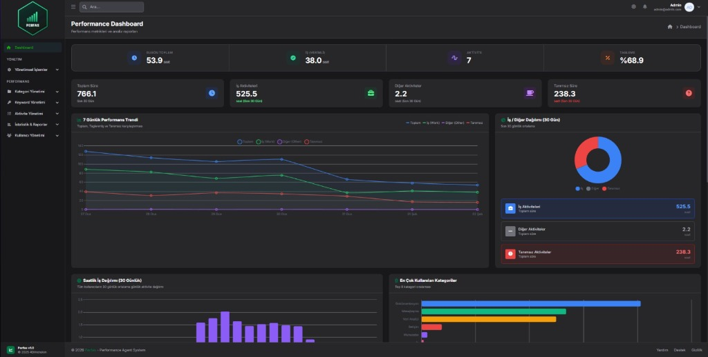
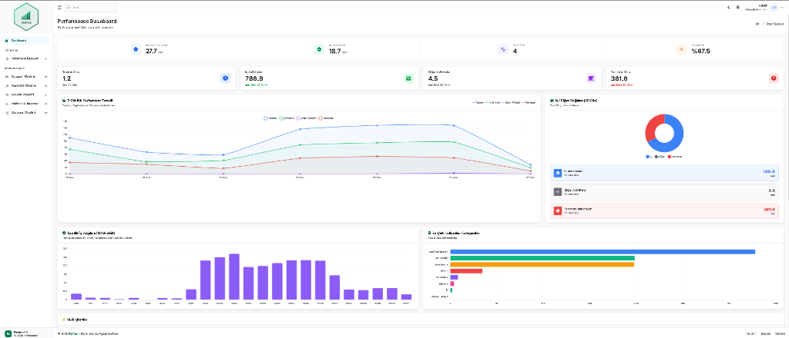

İK ve Operasyon ekipleri için çalışan verimliliğini otomatik ölçen ve raporlayan performans analiz sistemi
KPI takibi, detaylı raporlama ve ekip performansını tek panelden yönetin.


Performans değerlendirmelerini objektif verilerle destekleyin. Çalışan verimliliğini ölçülebilir metriklerle raporlayın ve adil değerlendirme süreçleri yürütün.
Ekip verimliliğini gerçek zamanlı takip edin. Zaman kaybına neden olan alışkanlıkları erken tespit edin ve veriye dayalı iyileştirme kararları alın.
Perfas, bilgisayar ve dijital araçlar üzerinden veri toplar. Gününün büyük kısmını sahada, mağazada veya üretim alanında geçiren ve bilgisayar kullanmayan ekipler için uygun değildir.
Perfas, ekipleri "izleme" amacıyla değil, süreçleri veriye dayalı iyileştirmek için tasarlanmıştır. Çalışanların her adımını bireysel olarak takip etmek ve baskı kurmak isteyen kurum kültürleri için önerilmez.
Çalışan bilgilendirmesi, açık rıza ve KVKK uyum süreçlerini işletmek istemeyen kurumlar için Perfas uygun değildir. Platform, şeffaf ve yasal çerçevede kullanılan ortamlarda değer üretir.
Çalışan performansı kişisel gözleme değil, otomatik toplanan verilere dayanır. İş/Diğer/Tanımsız aktiviteler net şekilde ayrıştırılır.
Manuel zaman kaydına gerek kalmaz. Sistem aktiviteleri otomatik toplar, kategorize eder ve raporlara dönüştürür.
Zaman kaybına neden olan alışkanlıklar ve verimlilik düşüşleri erken aşamada tespit edilir, proaktif aksiyon alınır.
Özellik: Arka planda çalışan agent, tüm dijital aktiviteleri otomatik toplar.
Fayda: Manuel zaman kaydına gerek kalmaz, veriler objektif ve kesintisizdir.
Sonuç: Ekip performans özetleri otomatik oluşturulur, yöneticiler dashboard'da anlık durumu görür.
Özellik: Keyword kuralları ile aktiviteler İş/Diğer/Tanımsız kategorilerine otomatik atanır.
Fayda: Verimli ve verimsiz zaman kullanımı net şekilde ayrışır.
Sonuç: Tanımsız aktiviteler tespit edilir, eksik keyword'ler eklenerek kategorizasyon oranı artırılır.
Özellik: Admin, yönetici, izleyici rolleri ve tüm işlemlerin log kaydı.
Fayda: Veri güvenliği kontrol altında, KVKK uyumluluğu sağlanır.
Sonuç: Güvenlik denetimlerinde izlenebilirlik sağlanır, yetkisiz erişim engellenir.
İlk 5 dakikada ne yapacağınızı gösterelim
Perfas, ekip performansını ölçmek, analiz etmek ve geliştirmek için tasarlanmış uçtan uca bir performans yönetim platformudur.
Perfas, çalışanların bilgisayar başında gerçekleştirdiği dijital aktiviteleri arka planda otomatik olarak toplar, önceden tanımlanmış keyword kuralları ile kategorize eder ve anlamlı raporlara dönüştürür.
Sistem sayesinde çalışanların mesai süreleri objektif verilerle ölçülür, verimli (İş) ve verimsiz (Diğer) aktiviteler net şekilde ayrıştırılır, zaman kaybına neden olan alışkanlıklar erken aşamada tespit edilir ve yönetim kararları kişisel gözleme değil, ölçülebilir verilere dayanır.
Agent yazılımı çalışan bilgisayarlarında arka planda çalışır, tüm uygulama ve web sitesi kullanımlarını otomatik olarak kaydeder. CPU kullanımı %1'in altında, RAM kullanımı 50MB seviyesindedir.
Keyword kuralları ile aktiviteler İş/Diğer/Tanımsız kategorilerine otomatik atanır. Öncelik sistemi ile çakışmalar çözülür. Tanımsız aktivite oranı %8'in altına düşer.
Gerçek zamanlı dashboard'da toplam süre, İş/Diğer dağılımı, kategori bazlı analiz ve trend grafikleri görüntülenir. PDF/Excel formatında rapor dışa aktarımı ve otomatik e-posta gönderimi mevcuttur.
Admin, Yönetici, İzleyici rolleri ile erişim kontrolü sağlanır. Birim bazlı filtreleme ile veri güvenliği korunur. Tüm işlemler audit log ile kayıt altına alınır.
Objektif verilerle değerlendirme, subjektiflikten kurtulma
Otomatik veri toplama ve raporlama ile manuel süreçler azalır
Trend analizi ile erken müdahale, iyileştirme alanlarının tespiti
6698 sayılı KVKK'ya tam uyum, DPA imzalanabilir
Satın alım sonrası size özel KPI şablonu ve kurulum rehberi alacaksınız